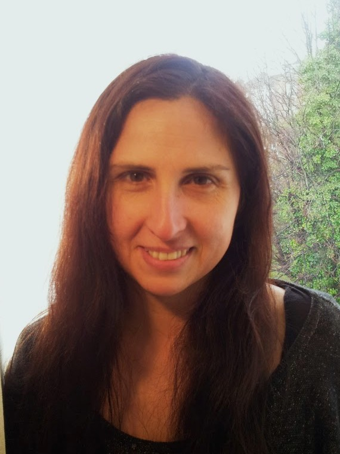

Hi, I'm Noe, a UX/UI designer with a background in social care.
Design has been a passion of mine for a long time, but for years life kept me working full time in social care. Looking back, that time gave me the most important thing I bring to design: a person-centred approach. In social care you start with the person, what matters to them and how they want to be supported. I bring the same thinking to every screen I design, together with a strong focus on accessibility, so that what I make works for people of all abilities.
My first steps into design came in 2020, during COVID, when I freelanced as a UX/UI designer for a developer. I worked on instinct and taught myself with free Google courses, finished a couple of projects, then went back to social care full time. The wish to return to design never went away.
In 2025 I took time out to train properly. In 2026 I completed the IBM UI/UX Designer and Google UX Design professional certificates, and IBM's Generative AI for UI UX Design specialisation. Since then I've designed and built my own app, carried out accessibility audits on apps I'd worked on before, and collaborated with a developer on an app for people learning to sail.
I work through the whole design process: user research such as interviews and surveys, personas and user flows, wireframes and prototypes in Figma, high-fidelity design, usability testing, and accessibility audits against WCAG guidelines.
Now I'm looking for a role, paid or voluntary, where I can learn from a team, grow as a designer, and bring years of putting people first to the work. I'm based in Bristol, UK, and happy to work remotely, hybrid or in person.